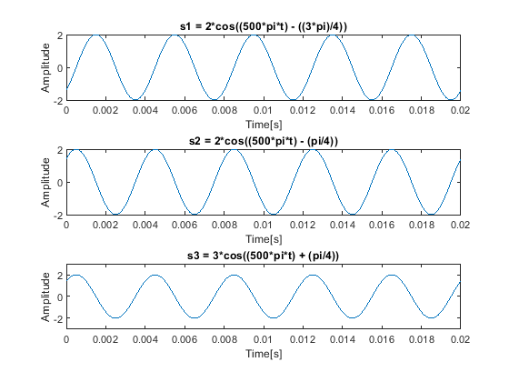
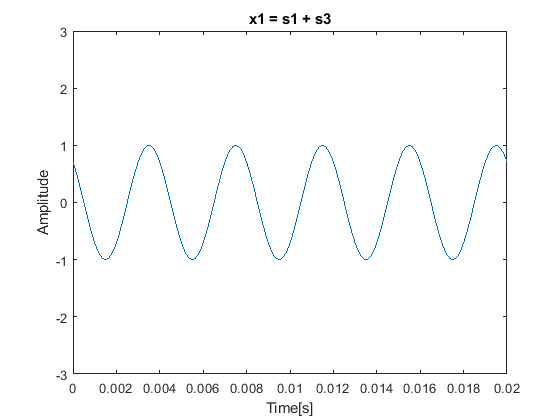
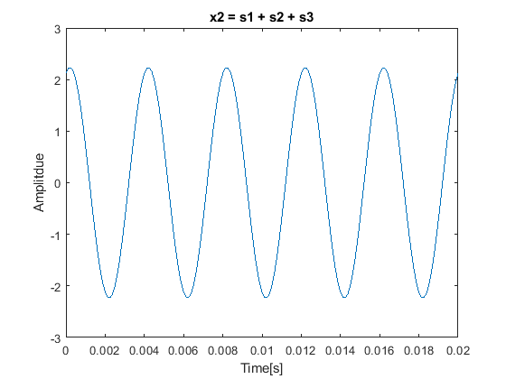
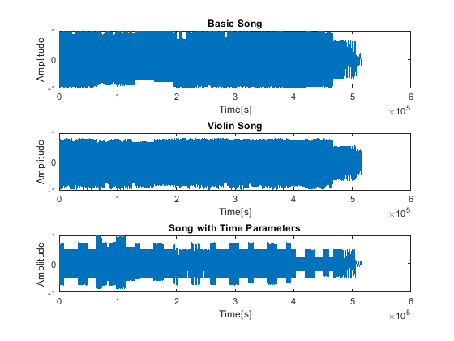

Contents
- PREAMBLE
- QUESTION 1: COMMENTING
- QUESTION 2
- 2(a) PLOT FIRST FOUR PERIODS
- 2(b) CREATE AND SUBMIT .WAV FILE
- 2(c) PLOT FIRST FOUR PERIODS
- 2(d) PLOT FIRST FOUR PERIODS
- QUESTION 3
- DEFINE MUSIC
- 3(a) CREATE SOUND
- 3(b) MODIFY FUNCTION (key_to_note_violin function is at end of file)
- 3(c) CREATE SOUND (build_song_violin function is at end of file)
- DEFINE MUSIC (NEW FORM)
- 3(d) CREATE SOUND (build_song_time function is at end of file)
- 3(e) ANSWER QUESTION
- 3(f) PLOT COMPARISONS
- 3(g) ANSWER QUESTION
PREAMBLE
DO NOT REMOVE THE LINE BELOW
clear;
QUESTION 1: COMMENTING
=========================
type('eel3135_lab02_comment.m')
%% ACKNOWLEDGEMENTS / REFERENCES:
% This code uses functions written by Ken Schutte in 2019, which is used to
% read and decode midi files. The code is under a GNU General
% Public License, enabling us to run, study, share, and modify the
% software.
%
% More info can be found at: http://www.kenschutte.com/midi
%% INITIAL SETUP
clear
close all
clc
%% DEFINE MUSIC
% INTITIAL VARIABLES
Fs = 44100; % ==> This is the cyclic frequency sample that is the audio signal <==
% ===>
% readmidi loads the gym.mid file and midiInfo processes those results,
% 0 and two specify how it should be decoded. The results come out with Notes
% being the parsed data, and endtime holds the ened time of the data
% <===
[Notes, endtime] = midiInfo(readmidi('gym.mid'), 0, 2);
L = size(Notes,1); % ==>
% Calculates the number of rows in the Notes array
% that is tken from the MIDI file, which means that it's
% the total number of notes in the MIDI file
% <==
% ===>
% Calls the build_song function where
% ones(L,1) is the amplitude determined by the number of notes in the MIDI File
% Notes (:,) is the key numberfor the notes in the MIDI file to determine
% the corresponding key note
% Notes(:,6)-Notes(;,5) is how long each note is by calculating the difference
% between end time in column 6 and start time in column 5 of the notes array
% Fs is the cyclic sampling frequency that defines the rate the audio signal is sampled
% <===
x = build_song(ones(L,1), Notes(:,3), Notes(:,6)-Notes(:,5), Fs);
% ===>
% Calculates the total samples needed to represent the entire audio signal
% The total duration of the song is obtained by adding all the durations of
% the notes taken by subtracting end time with start time, and multiplying
% that sum by the Fs or samples per second (cyclic sample frequency)
% <===
tot_samples = ceil(sum(Notes(:,6)-Notes(:,5))*Fs);
% ===>
% This line creates the time vector from 0 to the total duration of the song
% based on total number of smaples (tot_samples) and the cyclic sampling frequency (Fs)
% <===
t = 0:1/Fs:(tot_samples-1)/Fs; % ==> Step size is 1/Fs so that the time vector
% corresponds with each audio signal sample. The
% resulting t will be used to plot audio waveform
% <==
figure(1); % Creates a ficure to put the image in
subplot(211) % Creates a subplot in the figure(1)
plot(t, x); % Plots audio signal x against time vector t the subplot(211)
xlabel('Time [s]') % Labels x-axis of subplot(211)
ylabel('Amplitude') % Labels y-axis of subplot(211)
subplot(212) % Creaes a second subplot under the first in the figure(1)
plot(t, x); % Plots audio signal x against time vector t the subplot(212)
xlabel('Time [s]') % Labels x-axis of subplot(212)
ylabel('Amplitude') % Labels y-axis of subplot(212)
axis([0 0.1 -1 1]) % ==> Sets parameters of the x-axis to 0.1
% seconds and the y-axis to the range [-1,1],
% it basically zooms in on the waveform for
% better visualization of the start of the song
% <==
% ===>
% The line pauses to wait for the user to press a button before playing
% a sound inorder to examine the waveform before hearing the audio
% <===
input('Click any button to play sound')
soundsc(x, Fs); % Plays the audio signal
% ========
% YOU DO *NOT* NEED TO DESCRIBE THESE LINES (your free to figure it out though)
W = 0.1; % Window size
tic;
for mm = 1:ceil(tot_samples/Fs/W)
% PAUSE UNTIL NEXT FRAME
xlim([(mm-1)*W+[0 W]]); % Set limits of plot
tm = toc; % Check current time
if mm*W < tm, disp(['Warning: Visualization is ' num2str(mm*W-tm) 's behind']); end
drawnow; pause(mm*0.1-tm); % Synchronize with clock
end
% =======
%%
% =========================================
% SUPPORTING FUNCTIONS FOUND BELOW
% Add comments appropriately below
% =========================================
function x = key_to_note(A, key, dur, fs)
% key_to_note: ========> Creates the sinusoid waveform of a single note <=========
%
% Input Args:
% A: complex amplitude
% key: number of the note on piano keyboard
% dur: duration of each note (in seconds)
% fs: A scalar sampling rate value
%
% Output:
% x: sinusoidal waveform of the note
% ===> Takes apart the components of the note based on the MIDI key number <===
N = floortol(dur*fs); % Calculates the number of samples needed for each note using floortol to prevent floating points
t = (0:(N-1)).'/fs; % Creates a time vector that spans the duration of the note, t corresponds to each sample point in
% note duration
freq = (440/32)*2^((key-9)/12); % Calulates frequency of note based on MIDI key number, 440 Hz corresponds to note A4 or key number 49, 2^(key - 9) / 12)
% shifts frequency based on MIDI key number, using equal-tempered scale where each key is a half-step apart
% ===> Generates sinusoidal waveform for the note <===
x = real(A*exp(1j*2*pi*freq*t));
end
function x = build_song(As, keys, durs, fs)
% build_song: ========>
% Creates the full audio signal by placing each individual note int he correct
% position based on the start time and duration after calling key_to_note to generate
% waveform for each note
% <=========
%
% Input Args:
% As: A length-N array of complex amplitudes for building notes
% keys: A length-N array of key numbers (which key on a keyboard) for building notes
% durs: A length-N array of durations (in seconds) for building notes
% fs: A scalar sampling rate value
%
% Output Args:
% x: A length-(N*fs) length raw audio signal
%
% ===>
% Initializes the audio signal with zeros the same size as all the
% song notes by summing all note durations times the cyclic sampling rate (Fs)
% <===
x = zeros(ceil(sum(durs)*fs), 1);
for k = 1:length(keys)
% ===>
% note generates the waveform of the single note, start_time calculates
% the total start time for the current note by calculating all the durations
% of previous notes (basically calculates when the note should begin in the final audio
% <===
note = key_to_note(As(k), keys(k), durs(k), fs);
start_time = sum(durs(1:k-1));
% ===>
% This line calulates sample indices of the current note, n1 is
% start and n2 is end, flortol rounds to avoid float point errors
% <===
n1 = floortol(start_time*fs) + 1;
n2 = floortol(start_time*fs) + floortol(durs(k)*fs);
x(n1:n2) = x(n1:n2) + note; % This line places the generated waveform note into the correct position
% in the audio signal x. The note is added to x between the indices n1 and
% 2 so each note is placed at the correct time in the final audio signal
end
end
function x = floortol(x)
%FLOORTOL Apply floor operation after adding 0.5 to ensure no
% floating-point rounding errors that unintendedly decrease the
% value
%
x = floor(x+0.5);
end
QUESTION 2
=========================
2(a) PLOT FIRST FOUR PERIODS
% Define sampling frequency and the time vector fs = 8000; % Sampling frequency (8000 Hz) t = 0:1/fs:0.02; % Time vector from 0 to 0.02 with step size of 1/fs to correspond to each audio signal sample % Define sinusoids s1 = 2*cos((500*pi*t) - ((3*pi)/4)); s2 = 2*cos((500*pi*t) - (pi/4)); s3 = 3*cos((500*pi*t) + (pi/4)); % Plot sinusoids figure(1); % Subplot s1 subplot(311); plot(t,s1); title('s1 = 2*cos((500*pi*t) - ((3*pi)/4))'); xlabel('Time[s]'); ylabel('Amplitude'); axis([0 0.02 -2 2]); % y-axis is -2 to 2 because s1 amplitude is 2 % Subplot s2 subplot(312); plot(t,s2); title('s2 = 2*cos((500*pi*t) - (pi/4))'); xlabel('Time[s]'); ylabel('Amplitude'); axis([0 0.02 -2 2]); % Subplot s3 subplot(313); plot(t,s2); title('s3 = 3*cos((500*pi*t) + (pi/4))'); xlabel('Time[s]'); ylabel('Amplitude'); axis([0 0.02 -3 3]);
2(b) CREATE AND SUBMIT .WAV FILE
t_2 = 0:1/fs:2; % Time vector from 0 to 2 with step size of 1/fs to correspond to each audio signal sample % Define sinusoids with new t s1_2 = 2*cos((500*pi*t_2) - ((3*pi)/4)); s2_2 = 2*cos((500*pi*t_2) - (pi/4)); s3_2 = 3*cos((500*pi*t_2) + (pi/4)); % Scale sinusoids to be in range [-1 1] for audio writing s1_scaled = s1_2 / max(abs(s1_2)); s2_scaled = s2_2 / max(abs(s2_2)); s3_scaled = s3_2 / max(abs(s3_2)); % Use audiowrite to save the sinusoids as .wav files audiowrite('s1.wav', s1_scaled, fs); audiowrite('s2.wav', s2_scaled, fs); audiowrite('s3.wav', s3_scaled, fs);
2(c) PLOT FIRST FOUR PERIODS
% x1(t) = s1(t) + s3(t) x1 = s1 + s3; % Plot the first four periods of x1(t) subplot(111); plot(t,x1); title('x1 = s1 + s3'); xlabel('Time[s]'); ylabel('Amplitude'); axis([0 0.02 -3 3]); % Adjust axis to fit first 4 periods
2(d) PLOT FIRST FOUR PERIODS
x2 = s1 + s2 + s3; % Plot the first four periods of x2(t) subplot(111); plot(t,x2); title('x2 = s1 + s2 + s3'); xlabel('Time[s]'); ylabel('Amplitdue'); axis([0 0.02 -3 3]); % Adjusted axis to fit first 4 periods
QUESTION 3
=========================
fs = 32000;
DEFINE MUSIC
Music is "Frog's Theme" from the Chrono Trigger soundtrack
INSTRUCTIONS: Generate each set of notes individually with your functions and then add them together to create the music
% MELODY LINE 1 key1 = [87 87 87 83 85 87 92 90 87 83 80 ... 80 82 83 82 83 85 83 85 87 85 87 ... 90 87 87 87 83 85 87 92 94 95 94 ... 92 90 92 92 0]; dur1 = [34 17 17 17 17 50 50 101 84 17 202 ... 17 17 17 17 17 17 17 17 17 17 17 ... 17 34 17 17 17 17 50 50 67 17 17 ... 50 50 202 101 100]/100; A1 = ones(length(key1),1); % BASS LINE key2 = [71 71 71 71 68 68 70 70 71 71 70 ... 70 68 68 68 65 68 71 80 68 0]; dur2 = [101 101 101 101 101 101 101 101 101 101 101 ... 101 101 101 50 17 17 17 50 17 34]/100; A2 = ones(length(key2),1); % BASS LINE 2 key3 = [44 44 44 44 44 44 47 47 47 47 47 ... 47 47 40 40 40 40 40 40 42 42 42 ... 42 42 42 44 44 44 44 44 44 42 42 ... 42 42 42 42 40]; dur3 = [50 17 17 17 50 50 50 67 34 34 67 ... 100 50 50 17 17 17 50 50 50 17 17 ... 17 50 50 50 17 17 17 50 50 50 17 ... 17 17 50 50 50 17 17 17 50 50 8]/100; A3 = ones(length(key3),1);
3(a) CREATE SOUND
% Creates the songs melody = build_song(A1, key1, dur1, fs); bass1 = build_song(A2, key2, dur2, fs); bass2 = build_song(A3, key3, dur3, fs); % Combine melody and bass lines combined_song = melody + bass1 + bass2; % Normalize the combined song to ensure the signal stays within the [-1, 1] range combined_song = combined_song / max(abs(combined_song)); audiowrite('song.wav', combined_song, fs);
3(b) MODIFY FUNCTION (key_to_note_violin function is at end of file)
Only need to modify function -- this area can be empty
3(c) CREATE SOUND (build_song_violin function is at end of file)
melody_violin = build_song_violin(A1, key1, dur1, fs); bass1_violin = build_song_violin(A2, key2, dur2, fs); bass2_violin = build_song_violin(A3, key3, dur3, fs); % Combine melody and bass lines combined_song_violin = melody_violin + bass1_violin + bass2_violin; % Normalize the combined song to ensure the signal stays within the [-1, 1] range combined_song_violin = combined_song_violin / max(abs(combined_song_violin)); audiowrite('song_violin.wav', combined_song_violin, fs);
DEFINE MUSIC (NEW FORM)
Music is "Frog's Theme" from the Chrono Trigger soundtrack
INSTRUCTIONS: Generate the notes individually with one build_song_time function to make the music
keys = [87 87 87 83 85 87 92 90 87 83 80 ... 80 82 83 82 83 85 83 85 87 85 87 ... 90 87 87 87 83 85 87 92 94 95 94 ... 92 90 92 92 ... 0 71 71 71 71 68 68 70 70 71 71 ... 70 70 68 68 68 65 68 71 80 68 ... 0 44 44 44 44 44 44 47 47 47 47 ... 47 47 47 40 40 40 40 40 40 42 42 ... 42 42 42 42 44 44 44 44 44 44 42 ... 42 42 42 42 42 40]; srt_time = [0 34 50 67 84 101 151 202 303 387 403 ... 605 622 639 655 672 689 706 723 739 756 773 ... 790 807 840 857 874 891 908 958 1008 1076 1092 ... 1109 1160 1210 1412 1512 ... 0 101 202 303 403 504 605 706 807 908 1008 ... 1109 1210 1311 1412 1462 1479 1496 1513 1563 1580 ... 0 50 67 84 101 151 202 202 252 269 286 ... 303 353 403 454 471 487 504 555 605 655 672 ... 689 706 756 807 857 874 891 908 958 1008 1059 ... 1076 1092 1109 1160 1210 1261 1277 1294 1311 1361 1412 ... 1462 1479 1496 1513 1562]/100; end_time = [34 49 66 83 100 151 202 302 387 403 605 ... 616 632 649 666 683 700 716 733 750 767 784 ... 800 840 857 874 891 908 957 1008 1076 1092 1109 ... 1159 1210 1411 1512 1613 ... 25 151 227 353 429 555 630 756 832 958 1034 ... 1160 1235 1361 1437 1475 1492 1508 1563 1580 1613 ... 50 67 84 101 151 202 252 269 286 303 352 ... 403 403 453 471 487 504 554 605 655 672 689 ... 706 756 807 857 874 891 908 957 1008 1058 1076 ... 1092 1109 1159 1210 1260 1277 1294 1311 1361 1412 1462 ... 1479 1496 1513 1562 1613]/100; As = ones(length(keys),1);
3(d) CREATE SOUND (build_song_time function is at end of file)
% Scale song time? song_time = build_song_time(As, keys, srt_time, end_time, fs); song_time = song_time / max(abs(song_time)); audiowrite('song_time.wav', song_time, fs);
3(e) ANSWER QUESTION
% The benefits of the new structure is that it allows for better control % over placement and timing of each note in the song and allows for precise % time manipulation. Essentially it is more flexible to handle musicals % pieces by decoupling not duration from timing.
3(f) PLOT COMPARISONS
Generate song for each
% Plot results subplot(311); plot(combined_song); title('Basic Song'); xlabel('Time[s]'); ylabel('Amplitude'); subplot(312); plot(combined_song_violin); title('Violin Song'); xlabel('Time[s]'); ylabel('Amplitude'); subplot(313); plot(song_time); title('Song with Time Parameters'); xlabel('Time[s]'); ylabel('Amplitude');
3(g) ANSWER QUESTION
% The plots show difference in how the strong is constructed, % build_song generates a continuous waveform in fixed durations as a result % the overall shape of the plot is thicker and less defined in the [-1 1] parameters, % build_song_violin adds harmonics to each note to make the waveform more % complex and closer to real instrumental sounds, as a result it is % easier to see the shape of the plot and it isn't as close to the [-1 1] % parameters % build_song_time allows for finer control of the start and end times of % each note as a result, of the three plot the song_time plot is the most % defined in shape
========================================= SUPPORTING FUNCTIONS FOUND BELOW =========================================
function x = key_to_note(A, key, dur, fs) % key_to_note: % % Input Args: % A: complex amplitude % key: number of the note on piano keyboard % dur: duration of each note (in seconds) % fs: A scalar sampling rate value % % Output: % x: sinusoidal waveform of the note N = floortol(dur*fs); t = (0:(N-1)).'/fs; freq = (440/32)*2^((key-9)/12); x = real(A*exp(1j*2*pi*freq*t)); end function x = build_song(As, keys, durs, fs) % build_song: % % Input Args: % As: A length-N array of complex amplitudes for building notes % keys: A length-N array of key numbers (which key on a keyboard) for building notes % durs: A length-N array of durations (in seconds) for building notes % fs: A scalar sampling rate value % % Output Args: % x: A length-(N*fs) length raw audio signal % x = zeros(floortol(sum(durs)*fs), 1); for k = 1:length(keys) note = key_to_note(As(k), keys(k), durs(k), fs); start_time = sum(durs(1:k-1)); n1 = floortol(start_time*fs) + 1; n2 = floortol(start_time*fs) + floortol(durs(k)*fs); x(n1:n2) = x(n1:n2) + note; end end function x = key_to_note_violin(A, key, dur, fs) % key_to_note_violin: Produces a sinusoidal waveform corresponding to a % given piano key number % % Input Args: % A: complex amplitude % key: number of the note on piano keyboard % dur: duration of each note (in seconds) % fs: A scalar sampling rate value % % Output: % x: sinusoidal waveform of the note harmonics = [1, 2, 3, 4, 5, 6, 7, 8, 9, 10]; % Harmonics amplitudes = [1.59, 0.40, 3.98, 0.25, 0.10, 0.04, 0.15, 0.01, 0.05, 0.02]; % Amplitudes for each harmonic phases = [0, 1.6, -2.5, 0.6, -2.0, 2.1, -1.0, 1.8, -2.3, -2.1]; % Phases for each harmonic N = floortol(dur*fs); % Time vector for note t = (0:(N-1)).'/fs; % Initialize note signal x = zeros(size(t)); frequency = (440/32)*2^((key-9)/12); % Sum harmonics for k = 1:length(harmonics) % Have k value inside x = x + amplitudes(k) * cos(2 * pi * frequency * t*k + phases(k)); % Add harmonic to signal end % Scale signal by amplitude x = real(A * x); end function x = build_song_violin(As, keys, durs, fs) % build_song_violin: % % Input Args: % As: A length-N array of complex amplitudes for building notes % keys: A length-N array of key numbers (which key on a keyboard) for building notes % durs: A length-N array of durations (in seconds) for building notes % fs: A scalar sampling rate value % % Output Args: % x: A length-(N*fs) length raw audio signal % x = zeros(ceil(sum(durs)*fs), 1); for k = 1:length(keys) note = key_to_note_violin(As(k), keys(k), durs(k), fs); start_time = sum(durs(1:k-1)); n1 = floortol(start_time*fs) + 1; n2 = floortol(start_time*fs) + floortol(durs(k)*fs); x(n1:n2) = x(n1:n2) + note; end end function x = build_song_time(As, keys, start_time, end_time, fs) % build_song: % % Input Args: % As: A length-N array of complex amplitudes for building notes % keys: A length-N array of key numbers (which key on a keyboard) for building notes % start_time: A length-N array of start times (in seconds) for notes % end_time: A length-N array of end times (in seconds) for notes % fs: A scalar sampling rate value % % Output Args: % x: A length-(N*fs) length raw audio signal % total_duration = end_time - start_time; x = zeros(floortol(max(end_time) * fs), 1); % not total_duration because the sum of all the individual % durations is both the start and end times for k = 1:length(keys) % Calculate the start and end times for the current note note_start = start_time(k); note_end = end_time(k); % Calculate the duration of the current note note_duration = note_end - note_start; % Generate the note waveform using key_to_note note = key_to_note(As(k), keys(k), note_duration, fs); % Calculate the sample indices corresponding to the start and end times n1 = floortol(note_start * fs) + 1; % Start sample index n2 = floortol(note_end * fs); % End sample index % Add the note waveform to the output signal x(n1:n2) = x(n1:n2) + note; end end function x = floortol(x) %FLOORTOL Apply floor operation after adding 0.5 to ensure no % floating-point rounding errors that unintendedly decrease the % value % x = floor(x+0.5); end